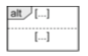
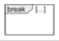

Sequence Diagrams
Introduction
it's a way to model interactions between objects
interaction specifies how messages and data are exchanged between objects
interaction partners: human (lecturer, admin) or non-human (server, printer, software)
interactions: conversation between people, message exchange between human and software, communication protocols, sequence of method calls in program, etc.
Basics
Interactions, interaction partners
a sequence diagram is 2D:
-
horizontal axis: involved interaction partners
-
vertical axis: chronological order of interaction
interaction: sequence of event specifications
interaction partners are lifelines:
-
head of lifeline is rectangle containing
object:Class
-
body of lifeline is vertical dashed line representing lifetime of associated object
Messages
message is defined via send and receive events
execution specification (optional):
-
continuous bar
-
used to visualize when interaction partner executes a behavior

rules:
synchronous message:
-
sender waits until it has received response message before continuing
-
syntax:
msg(par₁, par₂)
-
msg: name of message
-
par: parameters
-
notation:

asynchronous message:
-
sender continues without waiting for response msg
-
syntax:
msg(par₁, par₂)
-
notation:
response message:
-
can be omitted if content and location are obvious
-
syntax:
att = msg(par₁, par₂): val
-
att: return value assigned to variable (optional)
-
msg: name of message
-
par: parameters
-
val: return value
-
notation:
object creation:
-
dashed arrow, arrowhead pointing to head of lifeline of object that's being created
-
keyword
new
-
notation:

object destruction:
-
object is deleted
-
large cross at end of lifeline
-
notation:
found message:
-
sender unknown/not relevant
-
notation:

lost message:
-
receiver unknown/not relevant
-
notation:

Time-consuming message:
-
message with duration
-
usually messages transmitted instantly (by assumption); not in this case
-
notation:

Combined fragments
model various control structures, have 12 predefined operators.
Example:

Branches & loops
alt:
-
alternative sequence
-
like a switch statement, with guards selecting the path to be executed
-
guards modeled in square brackets, default true
-
guards have to be disjoint so that behavior is deterministic!

opt:
-
optional sequence
-
like an if without an else
-
actual execution depends on guard
-
exactly one operand

loop:
-
repeated sequence
-
min/max number of iterations -
(min..max) or (min, max). default (*), no upper limit.
-
guard evaluated when min number of iterations took place, checked on each iteration. loop quits if false.

break:
-
exception handling
-
one operand with a guard. if true:
-
interactions within operand are executed
-
remaining operations of surrounding fragment don't run
-
interaction continues at next higher level fragment (so like you skip a level)

Concurrency and order
seq:
-
weak sequencing, default order of events
-
can't skip around on the same lifeline
strict:
-
strict order
-
fixed sequence of events across lifelines
-
order of events on different lifelines between different operands is significant
-
messages in operand higher up on vertical axis are always exchanged before the ones that are lower

par:
-
concurrent interaction
-
relax chronological order between messages in different operands
-
restrictions in each operand have to be respected
-
order of different operands is irrelevant

critical:
-
atomic interaction
-
make sure that certain parts of interaction aren't interrupted by unexpected events
-
always has to be in that order

Filters and assertions
ignore:
-
irrelevant interaction
-
messages can occur at runtime but don't have other significance
-
one operand, irrelevant messages in curly brackets after keyword
ignore

consider:
-
relevant interaction with a particular importance
-
one operand. "dual" to ignore fragment
-
considered messages in curly brackets
-
and yes, you can use
ignore instead of consider and vice-versa

assert:
-
asserted interaction
-
mandatory interactions. the model is complete. can't have any deviations.
neg:
-
invalid interaction
-
describe situations that must not occur
-
depicting relevant but incorrect sequences

Further language elements
time constraints:
-
point in time for event occurrence:
after(5sec), at(12.00)
-
time period between two events:
{lower..upper}
-
now: current time
-
duration: calculation of duration of message transmission
Interaction reference:
-
integrates one sequence diagram in another sequence diagram
-
define with
sd name in the corner, then use the name in the diagram with ref in the corner
Gate:
-
allows to send and receive messages beyond boundaries of interaction fragment
state invariant:
-
asserts certain condition has to be true at certain time
-
if state invariant is not true, either model or implementation is wrong
-
notations: